Configuración de un Servidor Nginx con Hosts Virtuales y Directorios de Usuario
Conexion SSH
Nos conectaremos en la máquina virtual mediante ssh para comenzar la práctica.
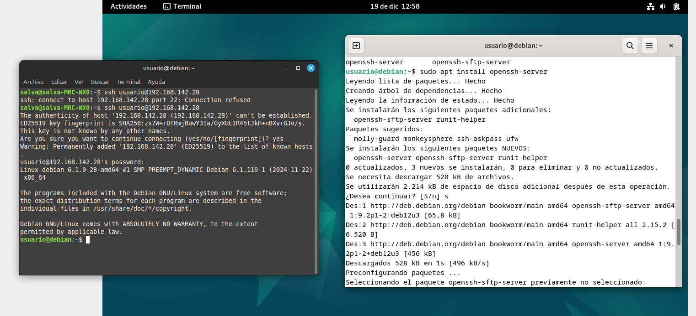
Creacion de Usuarios
Ahora crearemos los usuarios que necesitaremos para la práctica y le damos una contraseña a cada uno. Le añadimos -m y -s, para que se cree el directorio home y se le asigne un shell.
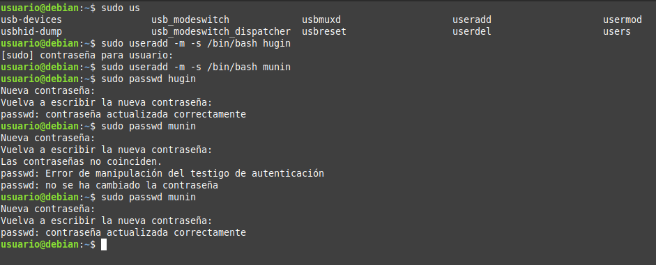
Creación de las Carpetas public_html
Ahora crearemos las carpetas public_html en cada uno de los directorios home de los usuarios. Para hacerlo usamos el comando su seguido del nombre de usuario y después creamos la carpeta.
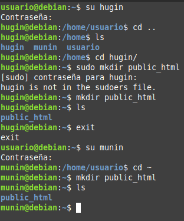
Asignación de Permisos
Para que los usuarios public_html, cambiaremos las ACLs de los directorios public_html de cada usuario. Para ello usaremos el comando setfacl y compronbamos que se han asignado correctamente con getfacl.
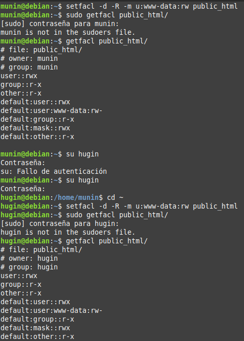
Creación de Páginas Web Estáticas
Se creará una página web estática en cada uno de los directorios public_html de los usuarios.
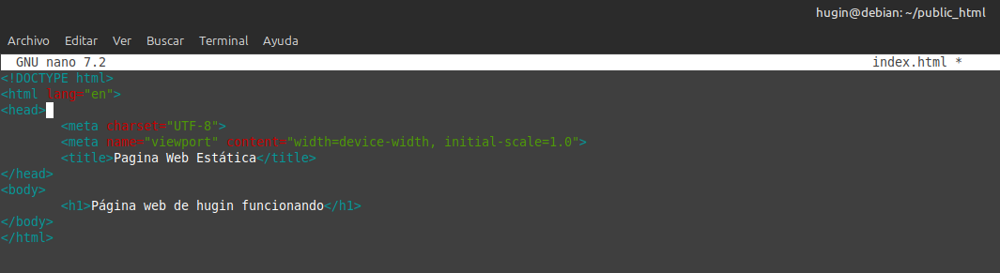
Para el otro usuario, haremos lo mismo.
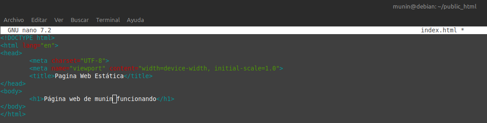
Configuración de Nginx
Instalamos Nginx con el comando sudo apt install nginx.
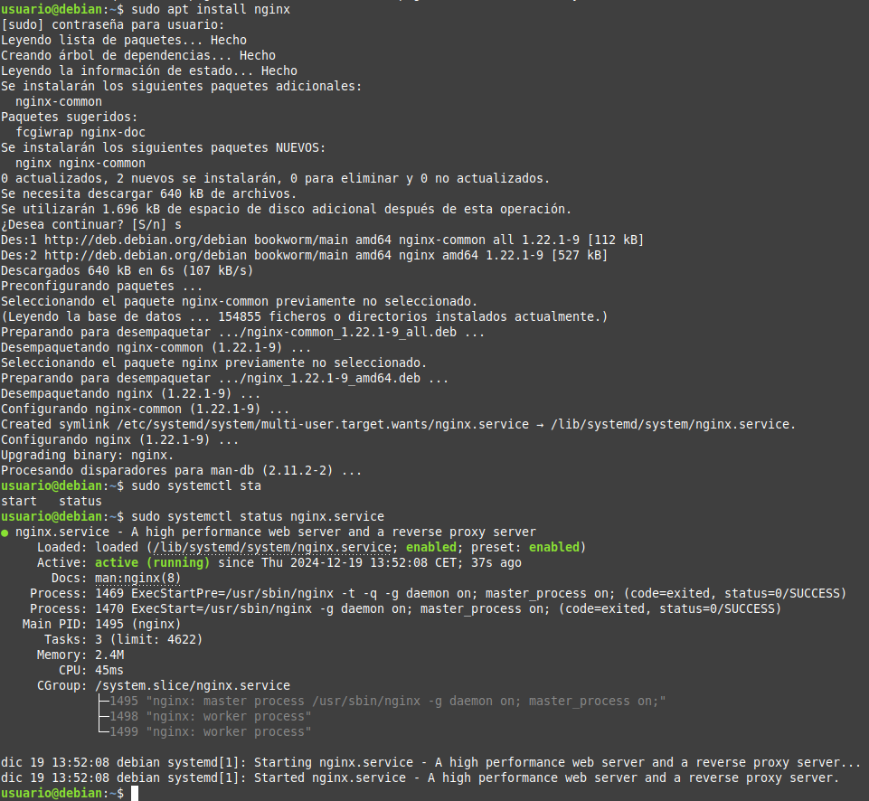
Con el comando sudo systemctl status nginx.service comprobamos que el servicio está activo.
Generación de Certificados SSL
Generemos los certificados SSL
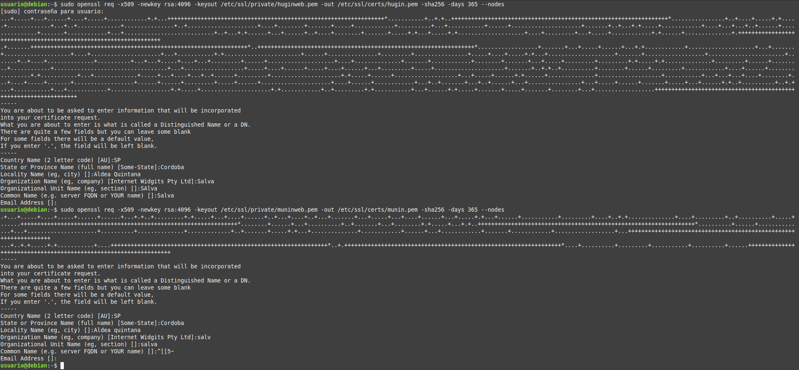
Ahora configurar los hosts virtuales en Nginx. Para ello, crearemos un archivo de configuración en la carpeta /etc/nginx/sites-available para cada uno de los usuarios.
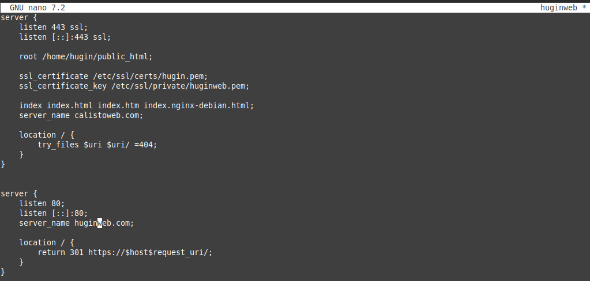
Para el otro usuario, haremos lo mismo.
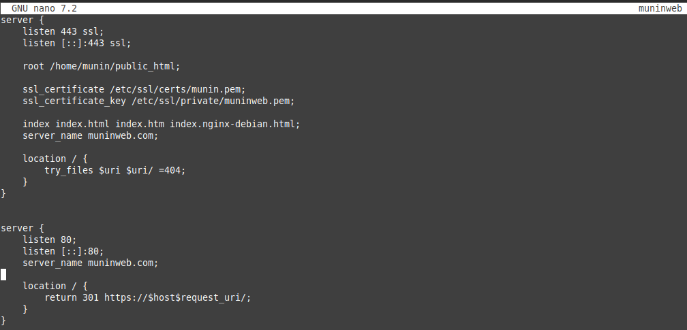
Ahora crearemos un enlace simbólico en la carpeta /etc/nginx/sites-enabled con el comando sudo ln -s /etc/nginx/sites-available/huginweb /etc/nginx/sites-enabled/huginweb. Después comprobamos el archivo de configuración con sudo nginx -t.
Comprobación de los Hosts Virtuales
Se comprobará que los hosts virtuales están funcionando correctamente. Para ello añadiremos las direcciones IP de los hosts virtuales en el archivo /etc/hosts.
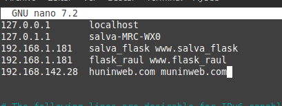
Comprobación de Funcionamiento de los Hosts Virtuales
Ahora intentamos acceder a las páginas web de los usuarios desde un navegador.
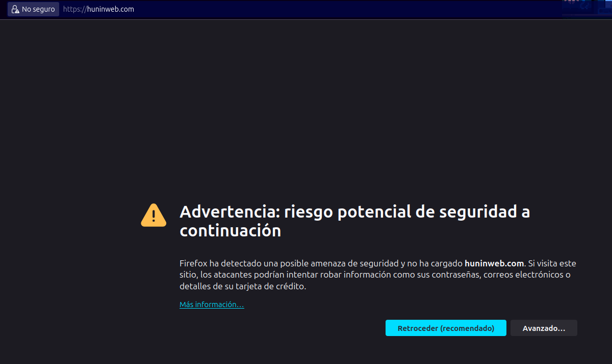
La página funcionando correctamente.
Para el otro usuario, haremos lo mismo.
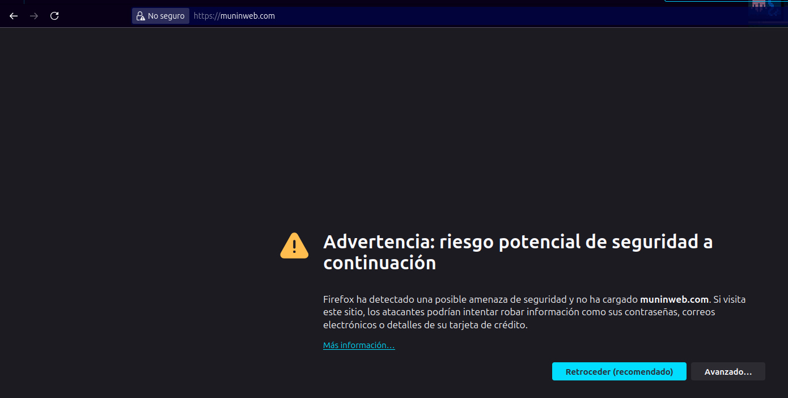